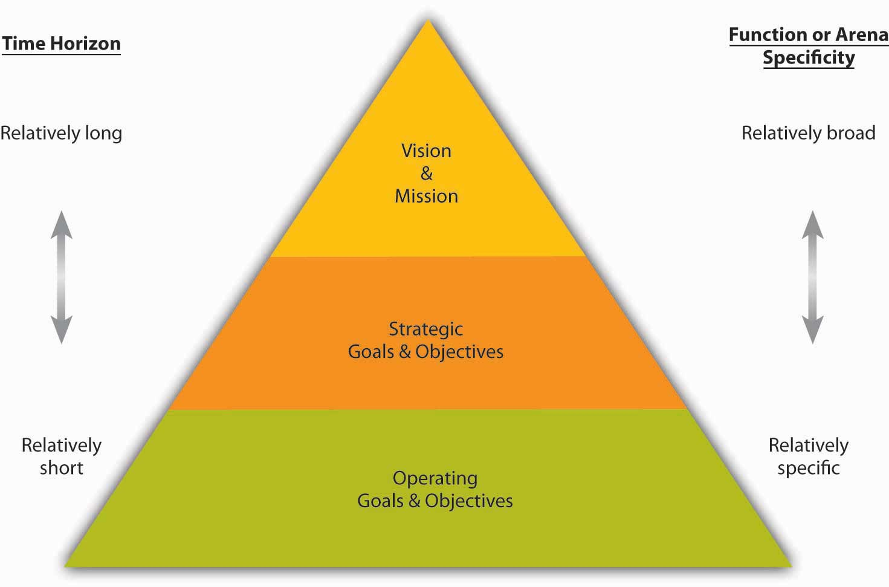

Goals and objectives provide the foundation for measurement. GoalsOutcome statements that define what an organization is trying to accomplish, both programmatically and organizationally. are outcome statements that define what an organization is trying to accomplish, both programmatically and organizationally. Goals are usually a collection of related programs, a reflection of major actions of the organization, and provide rallying points for managers. For example, Wal-Mart might state a financial goal of growing its revenues 20% per year or have a goal of growing the international parts of its empire. Try to think of each goal as a large umbrella with several spokes coming out from the center. The umbrella itself is a goal.
In contrast to goals, objectivesVery precise, time-based, and measurable actions that support the completion of a goal. are very precise, time-based, measurable actions that support the completion of a goal. Objectives typically must (1) be related directly to the goal; (2) be clear, concise, and understandable; (3) be stated in terms of results; (4) begin with an action verb; (5) specify a date for accomplishment; and (6) be measurable. Apply our umbrella analogy and think of each spoke as an objective. Going back to the Wal-Mart example, and in support of the company’s 20% revenue growth goal, one objective might be to “open 20 new stores in the next six months.” Without specific objectives, the general goal could not be accomplished—just as an umbrella cannot be put up or down without the spokes. Importantly, goals and objectives become less useful when they are unrealistic or ignored. For instance, if your university has set goals and objectives related to class sizes but is unable to ever achieve them, then their effectiveness as a management tool is significantly decreased.
MeasuresThe actual metrics used to gauge performance on objectives. are the actual metrics used to gauge performance on objectives. For instance, the objective of improved financial performance can be measured using a number metrics, ranging from improvement in total sales, profitability, efficiencies, or stock price. You have probably heard the saying, “what gets measured, gets done.” Measurement is critical to today’s organizations. It is a fundamental requirement and an integral part of strategic planning and of principles of management more generally. Without measurement, you cannot tell where you have been, where you are now, or if you are heading in the direction you are intending to go. While such statements may sound obvious, the way that most organizations have set and managed goals and objectives has generally not kept up with this commonsense view.
There are three general failings that we can see across organizations related to measurement. First, many organizations still emphasize historic financial goals and objectives, even though financial outcomes are pretty narrow in scope and are purely historic; by analogy, financial measures let you know where you’ve been, but may not be a good predictor of where you are going.Frost, B. (2000). Measuring performance. Dallas: Measurement International.
Second, financial outcomes are often short term in nature, so they omit other key factors that might be important to the longer-term viability of the organization. For instance, return on sales (ROS, or net profit divided by total sales) is a commonly used measure of financial performance, and firms set goals and objectives related to return on sales. However, an organization can increase return on sales by cutting investments in marketing and research and development (since they are costs that lessen the “return” dimension of ROS). It may be a good thing to cut such costs, but that type of cost-cutting typically hurts the organization’s longer-term prospects. Decreases in marketing may reduce brand awareness, and decreases in research and development (R&D) will likely stifle new product or service development.
Finally, goals and objectives, even when they cover more than short-term financial metrics, are often not tied to strategy and ultimately to vision and mission. Instead, you may often see a laundry list of goals and objectives that lack any larger organizing logic. Or the organization may have adopted boilerplate versions of nonfinancial measurement frameworks such as Kaplan and Norton’s Balanced Scorecard, Accenture’s Performance Prism, or Skandia’s Intellectual Capital Navigator.Ittner, C. D., & Larcker, D. (2003, November). Coming up short on nonfinancial performance measurement. Harvard Business Review, pp. 1–8.
Goals and objectives are an essential part of planning. They also have cascading implications for all the aspects of organizing, leading, and controlling. Broadly speaking, goals and objectives serve to:
Planning typically starts with a vision and a mission. Then managers develop a strategy for realizing the vision and mission; their success and progress in achieving vision and mission will be indicated by how well the underlying goals and objectives are achieved. A vision statement usually describes some broad set of goals—what the organization aspires to look like in the future. Mission statements too have stated goals—what the organization aspires to be for its stakeholders. For instance, Mars, Inc., the global food giant, sets out five mission statement goals in the areas of quality, responsibility, mutuality, efficiency, and freedom. Thus, goals are typically set for the organization as a whole and set the stage for a hierarchy of increasingly specific and narrowly set goals and objectives.
However, unless the organization consists of only a single person, there are typically many working parts in terms of functional areas and product or service areas. Functional areas like accounting and marketing will need to have goals and objectives that, if measured and tracked, help show if and how those functions are contributing to the organization’s goals and objectives. Similarly, product and service areas will likely have goals and objectives. Goals and objectives can also be set for the way that functions and product or service areas interact. For instance, are the accounting and marketing functions interacting in a way that is productive? Similarly, is marketing delivering value to product or service initiatives?
Within the planning facet of P-O-L-C alone, you can think of goals and objectives as growing in functional or product/service arena specificity as you move down the organization. Similarly, the time horizon can be shorter as you move down the organization as well. This relationship between hierarchy and goals and objectives is summarized in the following figure.
Obviously, the role of goals and objectives does not stop in the planning stage. If goals and objectives are to be achieved and actually improve the competitive position of the firm, then the organizing, leading, and controlling stages must address goals and objectives as well.
The way that the firm is organized can affect goals and objectives in a number of ways. For instance, a functional organizational structure, where departments are broken out by finance, marketing, operations, and so on, will likely want to track the performance of each department, but exactly what constitutes performance will probably vary from function to function.
In terms of leadership, it is usually top managers who set goals and objectives for the entire organization. Ideally, then, lower-level managers would set or have input into the goals and objectives relevant to their respective parts of the business. For example, a CEO might believe that the company can achieve a sales growth goal of 20% per year. With this organizational goal, the marketing manager can then set specific product sales goals, as well as pricing, volume, and other objectives, throughout the year that show how marketing is on track to deliver its part of organizational sales growth. Goal setting is thus a primary function of leadership, along with holding others accountable for their respective goals and objectives.
Figure 6.4 Goals and Objectives in Planning
Finally, goals and objectives can provide a form of control since they create a feedback opportunity regarding how well or how poorly the organization executes its strategy. Goals and objectives also are a basis for reward systems and can align interests and accountability within and across business units. For instance, in a business with several divisions, you can imagine that managers and employees may behave differently if their compensation and promotion are tied to overall company performance, the performance of their division, or some combination of the two.
Goals are typically outcome statements, while objectives are very precise, time-based, and measurable actions that support the completion of goals. Goals and objectives are an essential element in planning and are a key referent point in many aspects of organizing, leading, and controlling. Broadly speaking, within the P-O-L-C framework, goals and objectives serve to (1) gauge and report performance, (2) improve performance, (3) align effort and, (4) manage accountabilities.